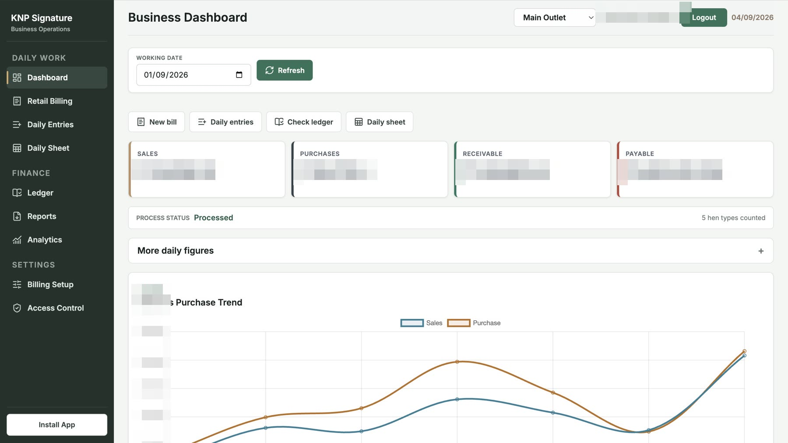

The workbook nobody wants to touch
One file runs the operation, but every change risks breaking it.
Internal platforms, workflow automation, and reporting built around your operations. Delivered from Nagpur, India, with agreed UK-hour reviews.

KNP Signature connects retail billing, daily entries, party ledgers, and reports. A deployed example from our client work in Nagpur, India.
Read the case study →One file runs the operation, but every change risks breaking it.
Staff work around a SaaS product because the real process has different rules.
Management waits while several people reconcile the same numbers.
A spreadsheet or a screen-share is often enough to begin.